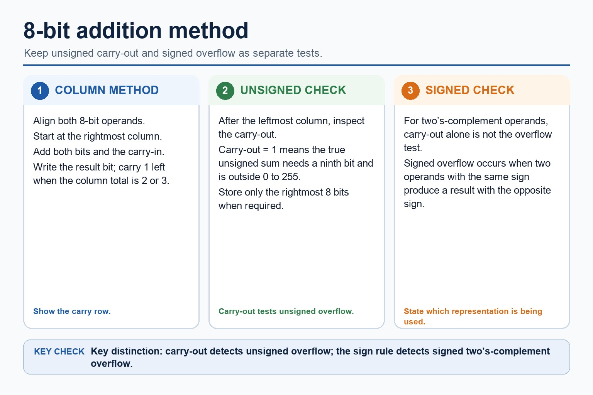
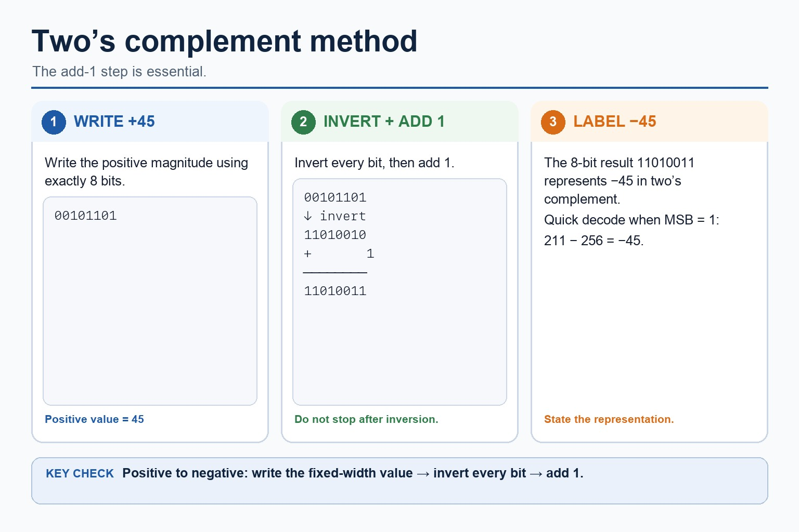
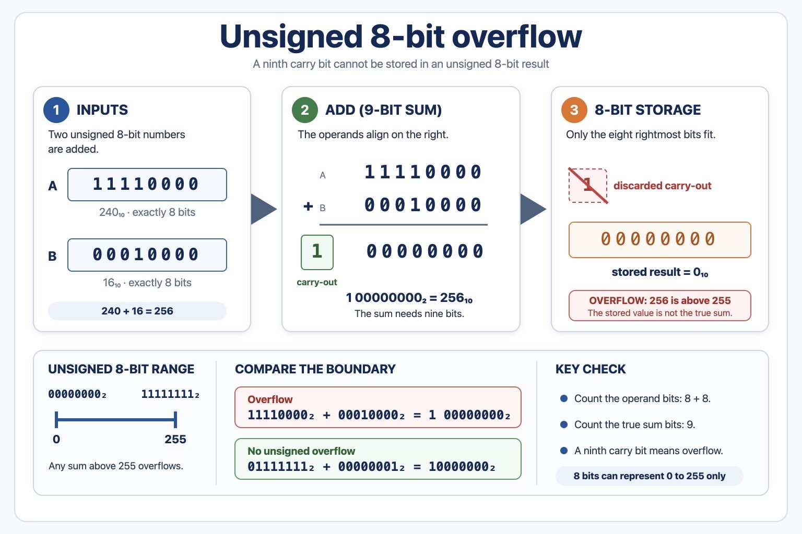

Cambridge AS9618 | Paper 1 | Section 1: Information representation
Signed binary arithmetic and overflow
Flexible-depth lesson
Signed binary arithmetic and overflow
S1.04, S1.05 | Visual relationships, mechanisms and worked examples.
Quickdiagnose + essentials
Fullcomplete explanation
Deepprerequisites + extension
Choosepractice by need
Teacher choice
Choose the depth for this group
Quick route
Use the diagnostic, learning objectives, first worked example and foundation question. Stop once the learner can explain the central distinction accurately.
Full route
Teach every knowledge-point material set, the worked method and all lesson questions.
Deep route
Add the prerequisite refresher, ask learners to connect the concept checklist, discuss the labelled extension and complete a transfer question without a model answer.
Part 1 | optional depth
Prerequisite knowledge and quick diagnostic
Recall S1.02, S1.04 before starting this lesson.
Give one accurate definition or method step before continuing. If it is missing, revisit only that prerequisite.
Open optional prerequisite refresher
The syllabus requires binary, denary, hexadecimal, Binary Coded Decimal (BCD), one's complement and two's complement; BCD and complements are representations rather than additional number bases.
Show understanding of binary, denary and hexadecimal number systems, BCD, and one's- and two's-complement representations.
The syllabus explicitly requires both addition and subtraction using positive and negative binary integers; fixed-width representation must be retained throughout a calculation.
Perform binary addition and subtraction using positive and negative binary integers.
Part 2 | visual explanation
Learn each point through visuals
Use the relationship map, mechanism and concrete cue before opening precise wording.
01
S1.04 · process
Signed arithmetic keeps one fixed-width bit pattern
Concept relationships
Alignsame bit width
Addright to left
Carrycarry into next column
Negativetwo's complement
Subtractadd the negative
Readinterpret stored result
See how it works
Encode
Prepare both operands
Use the same width and encode a negative operand correctly.
Operate
Add column by column
Subtraction can be performed by adding the two's-complement negative.
Interpret
Keep the stored width
Discard only a carry beyond the fixed width, then decode the result.
S1.04 diagrams
1 / 2
01
Diagram · 1 of 2
8-bit addition method

Open text transcript
Align the two 8-bit operands and start at the rightmost column.
Add both bits and any carry-in; write the result bit and carry 1 left when required.
For unsigned addition, a carry-out beyond bit 7 means the true sum needs more than 8 bits.
Without a carry-out, the stored 8-bit result remains within the unsigned range 0 to 255.
A leftmost result bit of 1 is not by itself evidence of unsigned overflow.
02
Diagram · 2 of 2
Two’s complement method

Open text transcript
Write the positive magnitude using exactly 8 bits.
Invert every bit, then add 1 to form the negative two's-complement value.
For +45: 00101101 becomes 11010010 after inversion, then 11010011 after adding 1.
The 8-bit value 11010011 represents -45 in two's complement.
When the MSB is 1, quick decode uses unsigned value minus 256.
Open precise syllabus wording
Perform binary addition and subtraction using positive and negative binary integers.
The syllabus explicitly requires both addition and subtraction using positive and negative binary integers; fixed-width representation must be retained throughout a calculation.
02
S1.05 · decision
Overflow means the true result does not fit
Concept relationships
Widthfixed number of bits
Unsigned 8-bit0 to 255
Signed 8-bit-128 to 127
True resultmathematical answer
Stored resultbits that remain
See how it works
Range
Find representable limits
Use both the bit width and the stated signed representation.
Calculate
Find the true result
Do the arithmetic without assuming every carry means overflow.
Decide
Compare result with range
Overflow occurs only when the true result lies outside the limits.
S1.05 diagrams
01
Diagram · 1 of 1
Unsigned 8-bit overflow

Open text transcript
00000000₂ to 11111111₂ = 0 to 255
An unsigned 8-bit result cannot store a value above 255.
Carry-out
11110000₂ + 00010000₂ = 1 00000000₂
The ninth bit is a carry-out beyond the 8-bit storage width.
Boundary warning
01111111₂ + 00000001₂ = 10000000₂
No unsigned overflow: the result is 128, which still fits in 8 bits.
Open precise syllabus wording
Show understanding of how overflow can occur in fixed-width binary arithmetic.
Overflow occurs when the mathematical result is outside the range representable by the stated bit width and representation; it is not inferred from every internal carry or from a leading 1 alone.
Open precise terminology and exam facts
The syllabus explicitly requires both addition and subtraction using positive and negative binary integers; fixed-width representation must be retained throughout a calculation.
Overflow occurs when the mathematical result is outside the range representable by the stated bit width and representation; it is not inferred from every internal carry or from a leading 1 alone.
Perform binary addition from the least-significant bit, carrying left when a column total is 2 or 3. Positive and negative integers must be interpreted using the stated representation and fixed bit width.
Overflow occurs when the mathematical result is outside the range representable in the available bits. For unsigned 8-bit addition, a carry beyond bit 7 shows that the true result is greater than 255. For signed arithmetic, compare the result with the signed representable range rather than treating every carry as overflow.
Binary subtraction applies to each positive or negative binary integer as well as binary addition; use the stated fixed width and signed representation when interpreting the result.
One's-complement representation forms a negative integer by inverting every bit of its positive fixed-width value. Two's-complement representation inverts every bit and adds 1. These are binary representations of signed integers, not separate number bases.
Unsigned subtraction can be performed column by column using borrowing, or by adding the two's complement of the subtrahend. For signed two's-complement subtraction A - B, form the two's complement of B and add it to A. Retain the fixed width, interpret the sign bit and check the representable range.
Representation overview: the required integer representations are binary, denary, hexadecimal, BCD, one's-complement and two's-complement. Conversion means preserving the integer value while changing its base or signed representation.
Worked method
Add two unsigned 8-bit integers
11110000 + 00110000 = 1 00100000.
The true result is 288, which is outside the unsigned 8-bit range 0 to 255, so the stored eight-bit result cannot represent the mathematical answer and overflow occurs.
Part 3 | select by learner need
Practice by question type
explainexplainfoundation2 marks
Question 1. Why does 01111111 + 00000001 not overflow as unsigned 8-bit arithmetic?
Show answer and marking guidance
Answer: The result 10000000 is 128, which remains inside 0 to 255.
Marking guidance: Award one mark for each distinct, technically accurate point or method step.
Common error: For the command word explain, perform that exact action; do not replace it with an unrelated fact.
applyrecallapplication2 marks
Question 2. What is the general overflow test?
Show answer and marking guidance
Answer: The mathematical result lies outside the range representable by the fixed-width binary representation.
Marking guidance: Award one mark for each distinct, technically accurate point or method step.
Common error: Do not repeat the same point in different words; each mark needs a separate idea or method step.
calculatecalculatetransfer4 marks
Question 3. Calculate the sum of 11001010 and 01110101 as unsigned 8-bit integers and explain the overflow.
Show answer and marking guidance
Answer: correct binary addition and carry method; 1 00111111 / stored result 00111111; true result needs a ninth bit / exceeds 255; therefore unsigned 8-bit overflow occurs
Marking guidance: Do not infer unsigned overflow only from the leftmost stored bit being 1.
Common error: Do not copy the worked example unchanged; transfer the method and check it against the new context.
Related past-paper indexes
Reference
Marks
Command word
Question type
9618/13/S/25 Q7(c)
2
complete
calculate
9618/12/W/25 Q7(a)
1
complete
recall
9618/11/S/24 Q7
3
complete
calculate
Index only: Cambridge question and mark-scheme wording is not reproduced on this public course page.
Part 4 | close when ready
Summary and exam reminders
Summary
Define signed binary arithmetic and overflow with the exact technical vocabulary expected by the syllabus.
Use the lesson method on a fresh context and show the intermediate decision, representation or calculation.
Match the shape of the answer to the command word and the available marks.
Check the final answer against the scenario instead of repeating a memorised sentence.
Common error to correct
Students often treat binary digits as decoration. Correction: every bit position has a value; if the position changes, the value changes.
Exam technique
Follow the command word: state gives a fact; explain links a cause to a consequence; compare covers both sides.
Match the number of independent points or method steps to the available marks.
For signed binary arithmetic and overflow, use the exact technical term before applying it to the scenario.